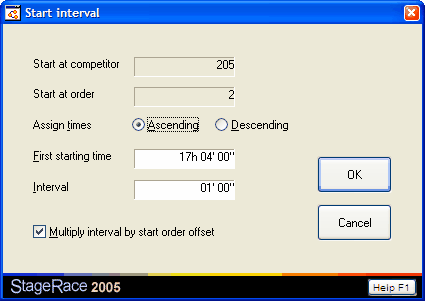

Time Trial Starting Order Dialog
This tab sheet consists of two lists: available and classified
competitors. The list of available competitors consists of all competitors
who were not
signed out neither dropped out at the start of the particular
stage. That is also why this starting order can only be drawn up after
the previous stage has finished.
If this is a half stage higher than 1 within a certain stage, and the
previous half stage has not yet been ridden (i.e. no competitors exist
in the previous half stage's arrival dialog) the arrived competitors
from the previous full stage are shown here as available and can be used
to set up an order. The competitors however, will not show up for ranking
in this half stage until finished in the previous half stage (that was
empty while setting up the starting order).
When competitors are already classified in the time trial to which a starting
list applies, these competitors are marked in the list with an asterisk in the
Ranked column. Depending on half
stage settings, their starting time can or cannot be altered anymore. If
these "late changes" are allowed, you can even alter the starting
time, after the competitor has finished for the time trial.

Submit
Competitors can move from the available list to the classified
list by entering their start no., starting order and starting time. When
Submit is clicked, the data is submitted
and the competitor moves.
You can also select one or multiple competitors in the classified
list, change their starting times and click Submit
again to apply the entered starting time to the entire selection.
Declass.
When you select one or multiple competitors in the classified list,
and you click Declass., the competitors
are moved back to the available list.
Functions
Note:
- As soon as a rider is classified, automatically the starting order
field will be incremented. So when you are entering successively ordered
competitors, you only need to enter the start nos. and possibly time (after
the first competitor has been entered);
- When a rider is clicked
in either one of the two lists, its data will be copied into the edit boxes
in order to edit it quickly;
- A large number of competitors can be
entered easily by one hand only, using the numeric keypad of the keyboard;
- Pressing
the Enter key has the same result as clicking the Submit
button; and
- Multiple riders from the classified list can
be selected (while holding down either the Shift or the Ctrl key). All selected
riders can be declassed simultaneously. Also all selected riders can be
given a new starting time at the same moment.
Through the Functions menu:
-
and

Fill this dialog on basis of a previous half stage's classification. Depending
on which half stage this time trial starting order dialog is actually for,
you can choose the last half stage before this half stage or the last half
stage from the previous full stage. The lowest ranked competitor is always
placed further down, so that the worst ranked competitor starts first in the
time trial. In the Automatic from earlier stage
dialog that appears:
- Choose the classification that must be used from
the chosen half stage:
- Use general individual
classification: for normal time trials
(2.6.022); or
- Use general teams
classification: particularly useful when you use the time trial
as a team time trial
(2.6.023).
- Choose Avoid consecutive
team members when you generate the starting order from an individual
classification, in order to use a more advanced sorting method, to prevent
two or more competitors from the same team to start consecutively in the
time trial.
- Choose Leave places for
dropped teams when you generate the starting order from a teams
classification and want room left open at the beginning of the starting
list for those competitors that are not in the used teams classification
anymore. This happens when teams have a too little amount of competitors
left over in that teams classification.
After automatically generating a time trial starting order with the Avoid
consecutive team members option set, a warning is issued in case of
the result not matching this particular criteria. This can happen if these
consecutive members are at a particular end of the order list; it is by design,
because it's not covered by any regulations, and it is up to the race organiser
to decide upon.

Calculate the times for the selected competitors. The starting time for the
first or last selected competitor can be entered, and other starting times
are calculated from there, in selected Ascending
or Descending order. Depending on Multiply
interval by start order offset:
- For each next selected competitor the starting time
is increased by the Interval that is entered;
or
- For each next competitor the starting time is calculated
based on its starting order minus that of the first selected competitor,
multiplied by the Interval that is entered.
Ensure that all competitors in the classified list have consecutive
starting orders, starting from one, using the current starting order.
Select all competitors at once in the classified list.

|